Lecture 8: Force Distribution
Building on the material covered in Lecture 7 on the theory behind the analytical procedures used to analyze seismic forces in a building, this lecture will continue with the analysis of loads using the Equivalent Lateral Force Procedure (ELFP). Lecture 8 will begin with how mass in a building is accounted for and then move on to cover the procedures for determining how vertical and horizontal forces are distributed in a building. An example that incorporates the entirety of material that has been covered so far will be provided at the end of this lecture for practice. The image below provides a visual summary of the material that has been covered to this point.
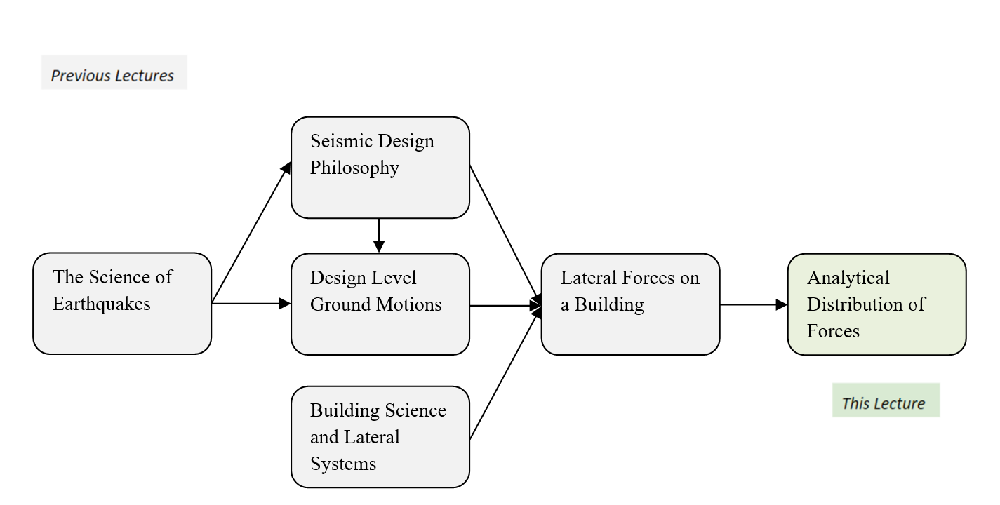Exam Requirements:
- Vertical Force Distribution
- Horizontal Force Distribution
Mass Distribution
As we have learned from the previous lecture, there are different types of loads that can act on a structure. While all of the different load types can be applied to the structure for analysis, only some of them are related to the effective seismic weight (and therefore seismic force). To recap, dead loads are included in the determination of the effective seismic weight because they are permanent and contribute to the effective seismic weight of a structure. On the other hand, most live loads are not included in the effective seismic weight of a structure because they are transient and do not accelerate
with the building. The exceptions apply to storage loads, partitions, or really heavy live loads (such as roof gardens or snow loads on the roof). Imagine a 3-story building with floors and walls. There are dead loads everywhere, from the floors to the walls, that contribute to the effective seismic weight of the structure.
Now, you are probably wondering: how do I account for all of the dead loads in a complex 3D structure? How do I add it all up? Is this going to take me forever to do? Don’t worry, there is a very convenient method. In this method, the dead loads from each diaphragm level (from the floor and the walls) are lumped
into one mass at one common location: the diaphragm level. As a result, we treat the lumped mass
per level as representative of all of the dead loads spread out all over that particular diaphragm level. The end result looks similar to a single degree of freedom (SDOF) system for a single story structure, and stacked SDOFs for the multiple stories. This method allows us to account for the fact that there is mass in the structure. Remember Newton’s Second Law of Motion F=ma? That equation can be tied into this method because mass contributes to force, which means that where there is mass, there is also force. This means that a complex 3D structure can be simplified by identifying the mass locations, also known as the locations of the applied force.
From the image above, you are probably wondering why are diaphragms chosen as the location along a building’s height to lump the mass? Why don’t we lump the mass at the floors and then the walls separately? This is because diaphragms break up the spans of the lateral force resisting system (LFRS), which allows for the mass at each diaphragm level to be transmitted to the top of the LFRS directly below. This is not only true, but also analytically convenient because it is easier to analyze the forces at each floor level. This method also allows you to analyze the mass at the very top of a LRFS, the roof, as a lumped mass. For analysis, this would mean that you will need to know the mass at each floor level. (The roof is treated as the highest
floor level.) You can determine the mass at each level by adding up all of the dead loads and any permitted live loads (see ASCE 7-16 Section 12.7.2) at that floor level. Now, the only thing that is not already part of the mass at each diaphragm level is the set of walls. The addition of the wall mass to the lumped mass
will be discussed in the next section.
Simply Supported
The mass at each level of a building is made up of the floor mass and the wall mass. Now that we have learned how to account for the floor mass at each level of a structure, let’s move on to learn how to include the wall mass. The method that we will be using is called The Tributary Area Method
. By using this method, you are able to divide sections of the building walls to be included in the mass at each floor level using tributary area
. This is the area of interest that contributes load to a certain building component (e.g. beam), and is defined by half of the area on both sides of the building component to the adjacent building components. This means that the building component is responsible for carrying the load in that region called the tributary area
. For example, the framing plan below shows the tributary area of the center beam by the red region.
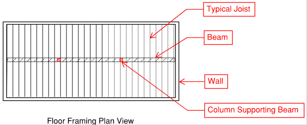 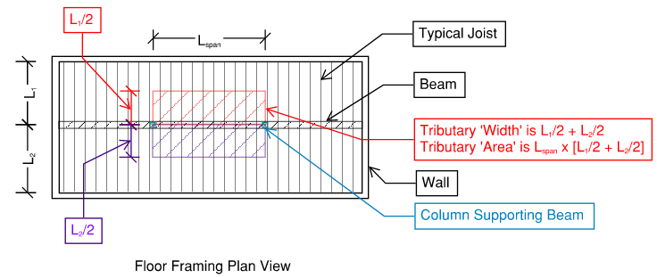
Let’s look at an example of a simply supported beam to see how the Tributary Area Method is applied.
Example 1: What are the support reactions of a simply supported beam with a uniform load?
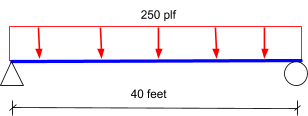Strategy: We will be using the Tributary Area Method to determine the support reactions of a simply supported beam with a uniform load. We will be dividing the length of the beam in half because each support reaction is responsible for carrying the load at half the distance of the beam.
Step 1: Determine the load. 250 plf x 40 ft = 10,000 lbs = 10 k.
Step 2: Divide by half to determine each support reaction. 10 k / 2 = 5 k per reaction.
Answer: The reaction at each support is 5 k. Shown below is a diagram of the support reactions.
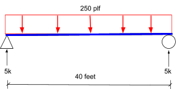Example 2: What are the support reactions of a beam with 3 support points? To make this example correct for the tributary method, there is a moment release in the beam at support B. (We don't need to learn about releases for the Seismic Exam).
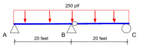Strategy: We will look at each span of the beam (between two supports) separately by dividing the beam into two equidistant simply supported beams. The process for the Tributary Method will be repeated for each span (simply supported beam). Since there is a support at the middle of the original beam, you will add up the reactions for the pin support in the middle from the two simply supported beams. It is helpful to name the reactions to keep track of them.
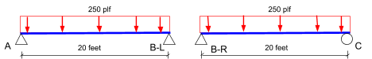Step 1: Determine the load. 250 plf x 20 ft = 5,000 lbs = 5 k.
Step 2: Divide by half to determine each support reaction. 5 k / 2 = 2.5 k per reaction.
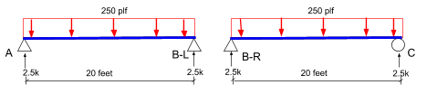Step 3: Add up the reactions for Support B. 2.5 k + 2.5 k = 5 k.
Answer: The reaction at each support is as follows: RA = 2.5 k, RB = 5 k, and RC = 2.5 k. Shown below is a diagram of the support reactions.
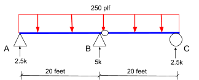Now that we have learned how the Tributary Area Method is used to analyze beams, let’s look at how the method is used for buildings. Imagine that you have a three-story building with wall heights h. Per the Tributary Area Method, a particular floor level (diaphragm) is responsible for carrying the load at half of the wall area of the story above and below that particular diaphragm level. To account for half of the wall area, you will be dividing the height of the building walls per floor level in half: h/2. This means that you will be using half of the wall area at the floor level above and below to account for the mass at the diaphragm between the two stories.
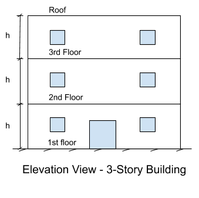Let’s start at the top (fourth) level of a three-story building: only the top half of the fourth level wall mass will be included in the mass at the roof level. This is because there is no level above the roof, which means that the wall height used to determine the wall mass at the roof level will be h/2.
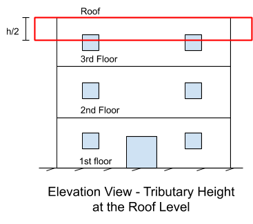Next, let’s move on to the third floor level: the bottom half of the fourth level wall mass and the top half of the third level wall mass will be included in the mass at the third level. This means that there are two halves of wall h: h/2, which can be added together to get the full wall height h. You will be using the wall height h to determine the wall mass for the third diaphragm level.
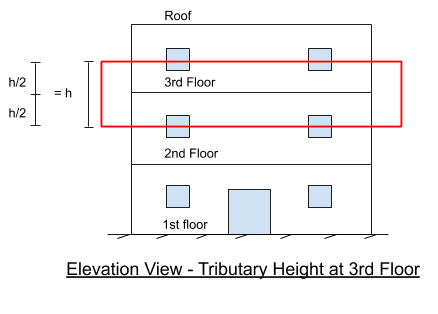Do the same for the second floor level, but take note that the bottom half of the first level wall mass will NOT be accounted for in the mass at the second floor level. This bottom half wall mass of the first floor level will be transferred to the ground and foundation, which means that we do not need to worry about it!
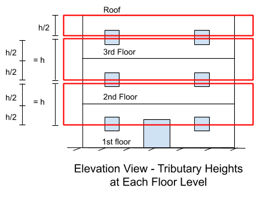Example 3: What is the mass at each level of a two-story concrete office building?
- Typical plan dimensions: 60ft x 40ft
- Typical story height: 14ft
- Typical floor self weight: 100 psf
- Typical wall self weight: 20 psf
- Partitions: 10 psf
Strategy: Similar to determining the total seismic weight, the mass at each floor level will be a single number. Since we are given the floor dimensions and the corresponding weights of the walls and floor, we can use this information to determine the mass of each floor level. Notice that partitions are given in the problem statement. This will not always be the case, so make sure to take notice of the intended use of the building and check ASCE 7-16 Section 4.3.2 to see if partitions should be included in the analysis. To simplify the calculations, we will be grouping the typical
floor and wall mass for a particular story, and allocating it to the corresponding floor level if the typical
tributary dimensions are satisfied.
Step 1: Typical floor area. 60ft x 40ft = 2400 square ft.
Step 2: Typical floor weight. 2400 square ft x 100 psf = 240,000 lbs = 240 k.
Step 3: Typical wall area. (60ft x 14ft x 2) + (40ft x 14ft x 2)= 2800 square ft.
Be careful when calculating the wall area for each diaphragm level! Remember that there are four walls total, or two sets of different dimensioned walls, which means that you will need to multiply by 2 for each set of walls to account for all four walls of a floor level.
Step 4: Typical wall weight per story. 2800 square ft x (20 psf + 10 psf) = 84,000 lbs = 84 k.
Note that partitions are to be included for office buildings per ASCE 7-16 Section 12.7.2.
Step 5: 3rd level/Roof. 240 k + (84k/2) = 282 k.
Don’t forget that for the Tributary Area Method, only half of the wall weight is added to the roof weight for the roof (3rd) level.
Step 6: 2nd level. 240 k + 84 k = 324 k.
To determine the mass at the 2nd diaphragm level, add the full wall weight to the floor weight. Remember that we do not need to account for the bottom half of the mass at the 1st floor level because it will be transferred to the ground and foundation, so don’t worry about it.
Answer: The weight at each floor is as follows:
- 3rd level/Roof: 282 k
- 2nd level: 324 k
Note that the effective seismic weight W is not equal to the total weight of the structure. The effective seismic weight W only includes the dead loads and additional loads listed in ASCE 7-16 Section 12.7.2 (heavy live loads, storage loads, snow loads). The effective seismic weight of the concrete office building is 606 k (282 k + 324 k = 606 k).
Vertical Force Distribution
Recall, we had a brief understanding of what base shear is in the previous lecture. We defined seismic base shear as the total horizontal force resisted through a structure’s lateral resisting system as the mass of the building accelerates due to ground shaking. Now, we are looking at how the forces from the base shear are distributed throughout a structure.
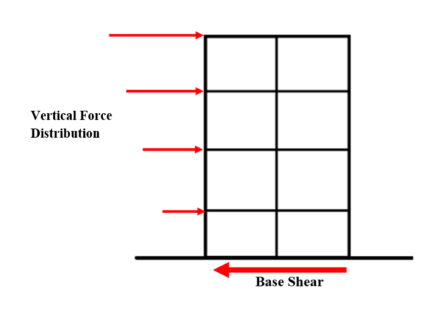 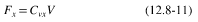First of all, what is Fx and what does it pertain to? It means the weight of the floor times the acceleration experienced. It is dominated by the first mode shape. However, the deformed shape is controlled by the k factor because there might be higher mode effects that contribute to the behavior of the deformed shape. You will see that it is not linear.
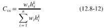ASCE 7-16 provides specific formulas to distribute the base shear throughout a structure. Vertical distribution is a function of Cvx and base shear. Cvx equates to the weight at a single story multiplied by the height of that story from the ground raised to the power of k; all of this is divided by the summation of multiplication of weight and height for all stories. Cvx is essentially a percentage that is multiplied by the base shear to determine a seismic force at each level. This sounds confusing, so let’s break down each component and understand its properties.
What is ‘k’?
Image via FEMA
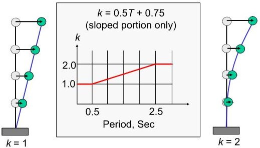 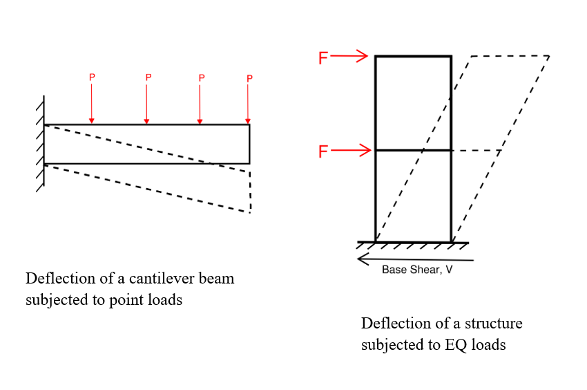We can see the comparison between a beam and a building. By examining the modal results through various tests, engineers concluded that correlating k=1 for the first modal shape is reasonable for buildings with a regular distribution of mass and stiffness (e.g. - short buildings). The greater amount of force applied to the beam will cause it to deflect more; similarly, if we applied more force towards a building, it will try to oscillate more. On the other hand, we can apply the same concept towards the k factor. If the building fundamental period is less than or equal to 0.5s, there is no scaling of vertical forces from k, and the forces match first mode vibration. If the building period is greater or equal to 2.5s, then k is equal to 2. A k-factor of 2 will scale the vertical forces to better match a higher mode shape.

The vertical distribution factor, Cvx will apply a greater acceleration the higher the floor is on a building. Whether the k value is equal to 1 or greater, the Cvx equation is going to still distribute more seismic force to the top of a structure than the bottom. Imagine a lollipop that wants to sway back and forth after being pulled back while held in place; the top part is going to move faster than the bottom part. This is acceptable and known because we assume that a typical building will move and accelerate in its fundamental period similar to an SDOF, where the top part is moving the most from the acceleration.
Let’s again consider example 3 from Simply Supported for you to really understand how these calculations work.
Strategy: Based on the figure in the previous section, we can now determine the vertical force distribution at each level. For simplicity, the period is given as T = 0.24s; hence k = 1. Remember, Cvx is equal to 1 because it is a percentage multiplier to distribute the seismic base shear that is assigned at each floor level! It is a good way to check whether you are on the right track since Cvx must equal 1. In the case that it does not equal 1, it means that you have a calculation error because it would indicate that the applied forces are larger than the actual forces. In addition, Fx is another way to check you are calculating the correct vertical force at each level since the summation of Fx must equal the seismic base shear.
| level | h(ft) | Wx (k) | k | Wx hx | Cvx | V (k) | Fx |
| 3/roof | 28 | 282 | 1 | 7896 | 0.64 | 101 | 64.4 |
| 2 | 14 | 324 | 1 | 4536 | 0.36 | 101 | 36.2 |
| Total | 606 | 12432 | 1 | 101 |
What about the ground floor/level 1? There’s actually no need to check tributary forces to the ground floor. We could go through and calculate the loads to the ground, but those forces will just be resisted by our very strong foundation elements and then to the earth itself. That load path is direct and doesn’t require explicit lateral design. So in structural engineering, the effective weight that would go to the ‘base’ level is essentially ignored in calculations. Things can become more confusing when there’s an underground parking garage, or when the structure extends below the ground surface. Here’s a few figures of structures that can extend below the ground surface. These types of structures can make analysis complicated, but for the seismic exam, you are dealing with the structures where the base level is usually at a flat earth’s surface.
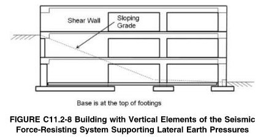 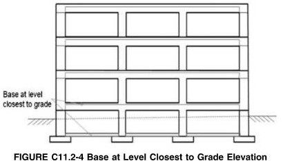Answer: We can see that the seismic base shear is divided as 36.2 kips at 2nd level and 64.4 kips at the 3rd level. This is the seismic shear at each level, NOT the story shear which is an envelope of the seismic forces. You will see the difference in the following section.
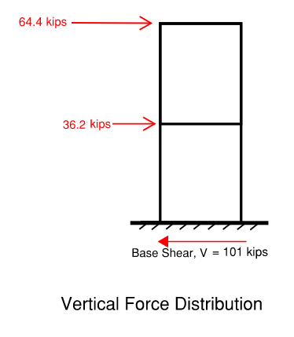Horizontal Force Distribution
As seen in the previous section, the vertical distribution of forces allowed us to find the external
forces acting at each floor level as a fraction of the total external base shear acting at the support of the structure. The horizontal distribution of forces helps us to find the internal
forces in the structural elements induced due to the external forces at each floor. This tells us the design shear in each story of the building i.e. how much lateral load is acting per story.
Finding the design story shear in a structure is similar to the calculation of shear in a cantilever beam that has several point loads acting along its length. In the cantilevered beam shown below, the point loads are similar to the vertical distribution of forces in a building and the load acting at the fixed end is similar to the total external base shear. For the given values, it is possible to find the shear force diagram by adding the forces acting in the same direction.
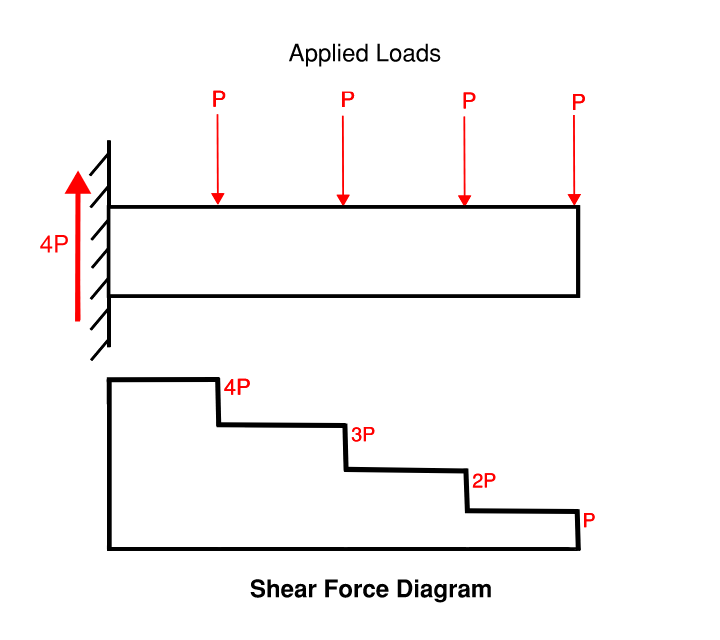Similarly for a structure, once we have determined the vertical distribution of forces, Fi, it is possible to determine the horizontal distribution of forces as per Equation 12.8-13 in Section 12.8.4 of ASCE 7-16.

where,
Vx (kips or kN) is the seismic design story shear in any story of the structure, and
Fi (kips or kN) is the fraction of external base shear induced in the story level i
.
It is important to note that just like the shear in the given cantilever beam, the seismic design story shear is also ADDITIVE because it is the sum of the design shear in that story plus the stories above it. So, the lower you go in the structure, the greater the story shear becomes!
Let us again consider example 3 from the Simply Supported section with the two-story building having a story height of 14 feet. As seen previously in the Vertical Force Distribution section, we found the vertical distribution of forces in the given structure. Now, we can find the horizontal distribution of forces in the structure using equation 12.8-13 from ASCE 7-16. The calculations are shown in the table below.
| level | h(ft) | Fx | Vx |
| 3/roof | 28 | 64.4 | 64.4 |
| 2 | 14 | 36.2 | 101 |
| 1 | 0 | 0 | 101 |
| Total | 101 |
Finally, we can conclude the forces at each level and the design shear forces at each story as shown in the figure below.
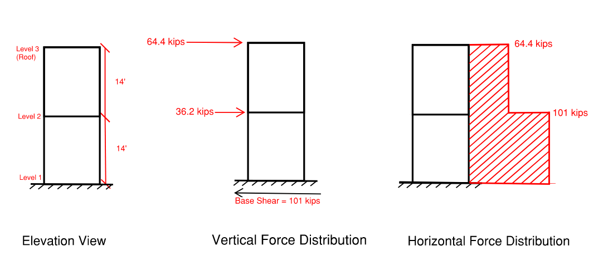Everything So Far
Question: What is the vertical and horizontal force distribution of the following structure?
A developer wants to create a laboratory for vaccines to be tested. They discussed with the seismic engineer that it has to be designed as a special reinforced concrete shear wall with an overall height of 58 ft, where site class = C. SS = 1.709, S1 = 0.62. The laboratory has the following dimensions: 4 stories tall. Typical story height is 14 ft, except the first story lobby is 20ft tall and the fourth story is 10 ft tall. Each floor has overall dimensions of 20ft x 25 ft. Typical floor weight is 50 psf, typical roof weight is 30 psf, and the typical wall weight is 30 psf.
Strategy: The question is simply asking for the seismic weight at each floor. The dimensions and dead loads were all given in the question statement. Since there is no information about live loading, there is no requirement to check if that should apply. Draw out the problem to help visualize the structure and its dimensions. When determining loads at each floor, it is usually best to set up a table to keep the information clean.
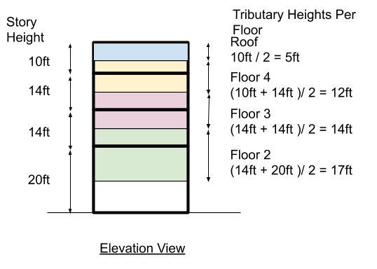Step 1: Set Up the Mass Distribution Table.
| level | Tributary Height(ft) | Surface | Floor Area (ft^2) | Wall Area (ft^2) | Floor Dead (k) | Wall Dead (k) | Roof Dead (k) | Total |
| 5 | 10 | Roof + Wall | 500 | (10*20*2)+(10*25*2) = 900 | 0 | 27 | (500)(30) = 15 | 42 |
| 4 | 12 | Floor + Wall | 500 | 1080 | 25 | 32.4 | 0 | 57.4 |
| 3 | 14 | Floor + Wall | 500 | 1260 | 25 | 37.8 | 0 | 62.8 |
| 2 | 17 | Floor + Wall | 500 | 1530 | 25 | 45.9 | 0 | 70.9 |
The weight at each floor is as follows:
- 5th level/Roof: 42 k
- 4th level: 57.4 k
- 3rd level: 62.8 k
- 2nd level: 70.9 k
- Total weight: 233.1 k ~ 233 k
The effective seismic weight of the concrete office building is 233 k (42 k + 57.4 k + 62.8k + 70.9k )
Step 2: Determine the approximate fundamental period.
$$T = T_a = C_t h_n^x$$ per ASCE 7-16 Equation 12.8-7 and Table 12.8-2
Where Ct = 0.02
X = 0.75
$$T = (0.02)(58)^0.75 = 0.42 s $$
Step 3: Determine SDSand SD1. Start by determining the site class. Check ASCE 7-16 Table 20.3-1. In the problem statement, it states that the site class = C. With our site class known, we can determine the acceleration parameters. Refer to ASCE 7-16 section Tables 11.4-1 and 11.4-2. Plugging in Site Class C with the given S1 , SS values, we get Fa = 1.2, Fv = 1.4. Use eqns 11.4-1 and 11.4-2, to determine the MCE level accelerations.
SMS = Fa SS = (1.0) x (1.709) = 1.709
SM1 = Fv S1 = (1.7) x (0.62) = 1.05
Using ASCE 7-16 eqns 11.4-3 and 11.4-4, we determine SDS and SD1.
SDS = (⅔)(SMS) = (⅔) x (1.709) = 1.139g
SD1 = (⅔)(SM1) = (⅔) x (1.02) = 0.68g
Step 4: Determine the Risk Category. Let’s check IBC Chapter 3 to determine which occupancy category a laboratory falls under. For this problem, use section 304 to check for additional definitions of occupancy categories. IBC Section 304.1 notes that laboratories shall be classified as Group B. Check IBC Table 1604.5 for the Risk Category. Referencing back to Table 1604.5, Group B shall be categorized under Risk Category II.
Step 5: Determine the seismic importance factor, Ie and Response Modification Factor R. Now that we know our risk category, refer to ASCE 7-16 Table 1.5-2 . Ie = 1.0 for Risk Category II structures. Since the problem statement states that the laboratory is to be designed as a special reinforced concrete shear walls system, refer to ASCE 7-16 Table 12.2-1 where R = 6.
Step 6: Determine the seismic response coefficient, Cs.
$$\C_s = \S_D_S / (R/I_e) = \ 1.0 / (6/1.0) = 0.166 $$
$$\C_s_,_m_a_x = \S_D_1 / (T(R/I_e)) = \ 0.68 / (0.42(6/1.0)) = 0.27 $$
$$\C_s_,_m_i_n = 0.044S_D_SI_e = (0.044)(1.0)(1.0) = 0.044 $$
So let’s check whether:
- $$ C_s ≤ \S_D_1 / (T(R/I_e)) → 0.166 ≤ 0.27 ✔ $$
- $$ C_s ≥ 0.44S_D_SI_e → 0.166 ≥ 0.044 ✔ $$
Since Cs satisfies both criteria, the governing value to use is 0.166 for the seismic response coefficient.
Step 5: Determine seismic base shear.
$$V = C_sW$$ We have our Cs and effective seismic weight from the previous section, which is 0.166 and 38.68 k, respectively. Multiply these two values and you’ll have the seismic base shear.
$$V = C_sW = (0.166)(233) = 38.68k $$
Step 7: Determine the vertical and horizontal force distribution.
| level | h(ft) | Wx (k) | k | Wx hx | Cvx | V (k) | Fx | Vx |
| 5 | 58 | 42 | 1 | 2436 | 0.28 | 38.7 | 10.78 | 10.78 |
| 4 | 48 | 57.4 | 1 | 2755 | 0.32 | 38.7 | 12.19 | 22.96 |
| 3 | 34 | 62.8 | 1 | 2135 | 0.24 | 38.7 | 9.44 | 32.41 |
| 2 | 20 | 70.9 | 1 | 1418 | 0.16 | 38.7 | 6.27 | 38.7 |
| Total | 233 | 8744 | 1 | 38.7 |